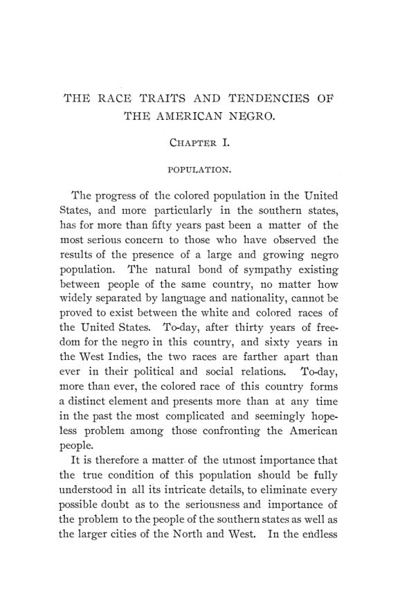

Hoffman, 1896: censo, mortalidade e raça nas tabelas de um estatístico
Leitura: 10 min
Em 1896, Frederick L. Hoffman reuniu censos, registros de óbitos e dados de seguradoras para comparar a mortalidade de brancos e negros nos EUA. O livro e o uso que se fez dele, descritos pelas fontes.


Um professor chamado Gilliam, num artigo da Popular Science Monthly, projetou que a população negra do Sul dos Estados Unidos cresceria 3,5% ao ano e chegaria a 12 milhões em 1900. Frederick L. Hoffman refez a conta pelo método do próprio Gilliam e mostrou que, por ele, o Sul deveria ter tido mais de 9 milhões de habitantes negros em 1890. O censo daquele ano contou 6.741.941. Para Hoffman, o erro tinha causa conhecida: Gilliam olhou só a natalidade e ignorou a mortalidade.
A tabela de projeções fracassadas abre Race Traits and Tendencies of the American Negro, publicado em 1896 nas Publications of the American Economic Association, num volume triplo de 329 páginas. Hoffman, nascido na Alemanha, assinou o prefácio em Newark, Nova Jersey, em 28 de julho de 1896. Conta ali que coletava estatísticas vitais havia cerca de dez anos, nas horas livres de uma vida dedicada aos negócios, e agradece a Carroll D. Wright, comissário do Trabalho, a John S. Billings, responsável pelas estatísticas de mortalidade do censo, e ao professor W. F. Willcox, pela ajuda na pesquisa e na publicação.
“fazendo uso exclusivo do método estatístico” (“making exclusive use of the statistical method”)
A promessa do prefácio é essa: dar em cada caso uma tabela concisa, de modo que o leitor possa chegar às próprias conclusões, independentemente das deduções do autor. O livro tem sete capítulos: população, estatísticas vitais, antropometria, mistura racial, condições sociais, condições econômicas e conclusão. O segundo, sobre mortalidade, ocupa mais de cem páginas e é o núcleo empírico da obra.
O que os censos mostravam, segundo Hoffman?
O ponto de partida é o décimo primeiro censo, o de 1890. Entre 1880 e 1890, a população negra dos estados do Sul cresceu 13,24%, contra 23,91% da população branca da mesma região. Muitos contestaram o resultado, alegando falha na contagem. Hoffman defende o censo: depois de examinar a distribuição por idade, que considera o teste mais delicado de uma enumeração, julga o de 1890 tão cuidadoso quanto os dez anteriores. Ao mesmo tempo, descarta o de 1870, que chama de reconhecidamente defeituoso, e por isso compara a população em intervalos de trinta anos.
“raciocinar a partir de resultados brutos, nisto como em outros ramos da investigação estatística, só pode ser inútil e enganoso” (“Reasoning from gross results in this as in other branches of statistical inquiry must be useless and misleading”)
O capítulo sobre população acompanha ainda a migração do campo para as cidades, a concentração em certos condados e o fracasso de projetos de colonização, como uma colônia de famílias negras americanas no estado mexicano de Durango, que durou menos de um ano. Hoffman conclui que a população negra permaneceria no Sul e tenderia a se concentrar nas cidades, nos bairros que ele descreve como os mais insalubres.
Como ele mediu a mortalidade?
Com os relatórios anuais dos departamentos de saúde de dez cidades do Sul: Washington, Baltimore, Richmond, Memphis, Louisville, Atlanta, Savannah, Charleston, Mobile e Nova Orleans. Como os censos são decenais, Hoffman estimou a população de cada ano pelo método do Dr. Farr, e não pelos números das prefeituras, que usavam critérios diferentes entre si. O período, 1890 a 1894, foi escolhido por não ter epidemias.
Hoffman sabia que a taxa bruta engana quando as populações têm idades diferentes. Nas cidades do Norte, a população negra concentrava-se entre 15 e 45 anos, efeito da migração de jovens vindos do Sul. Ali, diz ele, a taxa bruta subestima a mortalidade e não tem valor. Por isso ele recorre às taxas por faixa etária publicadas por Billings para Nova York, Brooklyn, Boston e Filadélfia, e lamenta que o censo tenha usado métodos diferentes para Baltimore e o Distrito de Colúmbia, o que impedia uma comparação exata.
Para os estados, os dados eram escassos. Hoffman admite que quase não havia informação confiável sobre natalidade. Usa o registro do Alabama de 1888 a 1893, que mostrava cerca de três nascimentos por óbito entre brancos e dois entre negros, e os registros de Rhode Island, Connecticut e Massachusetts, onde os óbitos de pessoas negras superavam os nascimentos. Em Rhode Island, de 1861 a 1893, foram 5.258 nascimentos e 5.276 óbitos.
“não são os números absolutos, mas apenas suas proporções relativas, que são essenciais” (“it is not absolute numbers, but their relative proportions only that are essential”)
A frase, que Hoffman toma de Milne, autor de um tratado sobre anuidades e seguros, é a premissa que sustenta o capítulo. O autor reconhece que as estatísticas de mortalidade das cidades americanas ficam aquém dos fatos, mas supõe que o sub-registro atinja os dois grupos na mesma proporção. Com isso, as razões entre as taxas continuariam válidas mesmo que os níveis estivessem errados.
O que Hoffman concluiu dessas tabelas?
O resumo do capítulo lista dez conclusões. Hoffman sustenta que o excesso de mortalidade era maior abaixo dos 15 anos, sobretudo entre crianças com menos de cinco; que a mortalidade da população negra subia desde a emancipação, enquanto a dos brancos caía; e que tuberculose, pneumonia e doenças infantis respondiam pela maior parte da diferença. Em outras doenças, como sarampo, escarlatina e difteria, os números eram menores para a população negra. A varíola e as mortes no parto, ele atribui à falta de vacinação e de atendimento médico.
A conclusão mais ambiciosa vem de duas tabelas sobre Washington e Baltimore, que dividem a população por altitude e densidade dos bairros, indicadores das condições de moradia. Em Baltimore, o excesso de mortalidade da população negra era de 88,95% nas áreas mais baixas e de 64,39% nas mais altas. Hoffman sustenta que o excesso persistia em qualquer condição e que, portanto, o efeito das condições de vida seria comparativamente pequeno diante da raça e da hereditariedade. O capítulo final abre com uma epígrafe de John Stuart Mill, que defendia a primazia do ambiente, e o livro se apresenta como resposta a essa posição.
Daí Hoffman tira a previsão central do livro: a taxa de crescimento da população negra cairia década após década até que os óbitos superassem os nascimentos. Ele sustenta também que educação, filantropia e religião não haviam alterado essa tendência e atribui a situação sobretudo a fatores morais, tema dos capítulos sobre condições sociais e mistura racial.
Onde entram o seguro de vida e as finanças públicas?
Hoffman trabalhava como estatístico da Prudential Insurance Company of America, e a lógica atuarial atravessa o livro. No capítulo de antropometria, ele cita estudos sobre peso e tuberculose do Mutual Life de Nova York (1874 e 1895), do Washington Life (1886) e da própria Prudential (1895). A regra das seguradoras dizia que peso abaixo da média predispunha à tuberculose. Hoffman mostra, com dados de recrutas do Exército, que soldados negros de 20 a 25 anos pesavam em média 2,17 libras por polegada de altura, contra 2,12 dos brancos, e trata como notável que, mesmo assim, a mortalidade por tuberculose fosse maior.
Tábuas de vida por grupo e taxas de mortalidade por idade são a matéria-prima do cálculo de prêmios. Nas décadas seguintes, o livro foi amplamente citado por seguradoras de vida americanas para justificar prêmios mais altos, benefícios menores ou a recusa de apólices para clientes negros. Esse é o uso pelo qual a obra ficou mais conhecida fora da economia.
O capítulo econômico faz uma contabilidade fiscal do mesmo tipo para Geórgia, Virgínia e Carolina do Norte, com valores de propriedade avaliada, impostos escolares e os depósitos do Freedman's Savings and Trust Company. No prefácio, Hoffman propõe que o Departamento do Trabalho e os governos estaduais façam levantamentos anuais sobre as condições materiais e sociais da população negra, para avaliar os resultados dos esforços filantrópicos e de caridade.
Na minha leitura
Na minha leitura, o interesse econômico do livro está na engenharia das tabelas. Hoffman adota procedimentos que a demografia da época já conhecia: troca as estimativas municipais por uma projeção uniforme, escolhe anos sem epidemia, separa as taxas por idade quando as estruturas etárias divergem e explicita a hipótese de que o sub-registro é proporcional. Mas cada conclusão depende de uma premissa que ele mesmo declara. A previsão de declínio pressupõe que o censo de 1890 contou bem; a validade das razões pressupõe sub-registro igual nos dois grupos; e a separação entre raça e ambiente depende de quanto altitude e densidade de bairro representam as condições de vida. Renda, ocupação, qualidade da moradia e acesso a médico não entram como variáveis nessas tabelas de controle. O próprio prefácio separa os fatos tabulados das deduções do autor, e é nesse ponto, entre a tabela e a premissa, que o leitor pode refazer as contas.
A outra lição é sobre o uso atuarial de médias de grupo. Uma seguradora que precifica pela mortalidade média de uma categoria cobra de cada segurado o risco do grupo, não o seu, e trata a diferença observada como dado fixo, quando ela pode mudar com renda, saneamento e atendimento médico. O próprio Hoffman registra que a mortalidade por varíola caía onde havia vacinação e que as mortes no parto dependiam de assistência médica. A pergunta econômica que o livro deixa, e que seu uso pelas seguradoras tornou concreta, é se uma taxa medida num momento deve ser lida como característica permanente de um grupo ou como resultado de condições que a política pública pode alterar.
Glossário
- Estatísticas vitais
- registros de nascimentos, óbitos e casamentos de uma população.
- Taxa bruta de mortalidade
- óbitos do ano por mil habitantes, sem ajuste pela composição etária.
- Distribuição etária
- proporção da população em cada faixa de idade; altera a taxa bruta mesmo com riscos iguais.
- Taxa por faixa etária
- óbitos por mil habitantes de uma mesma faixa de idade, que permite comparar populações com idades diferentes.
- Método de Farr
- forma de estimar a população nos anos entre dois censos, usada pelo estatístico inglês Farr.
- Tábua de vida
- tabela que mostra, para cada idade, quantos sobrevivem e quantos anos ainda se espera viver.
- Expectativa de vida
- número médio de anos que uma pessoa de certa idade ainda viveria, mantidas as taxas de mortalidade observadas.
- Sub-registro
- parte dos nascimentos ou óbitos que não chega aos registros oficiais.
- Prêmio de seguro
- valor pago pelo segurado, calculado a partir do risco estimado de morte ou sinistro.
- Capitação
- imposto fixo cobrado por pessoa, independentemente de renda ou patrimônio.
Fontes
- The Race Traits and Tendencies of the American Negro (pp. 1–329). JSTOR · Internet Archive (PDF)
- Sumário da edição no JSTOR: Publications of the American Economic Association, vol. 11, nº 1/3.
Documento em domínio público (EUA, publicado antes de 1931), via JSTOR Early Journal Content e Internet Archive. Resumo e comentário do autor deste site, sem afiliação com a American Economic Association. Encontrou um erro? Escreva: a correção é publicada no próprio texto, com data.
← Nº 48 · Hollander, 1895: Ricardo por carta, da moeda às máquinas Nº 50 · Fisher, 1896: o juro que antecipa o valor da moeda →